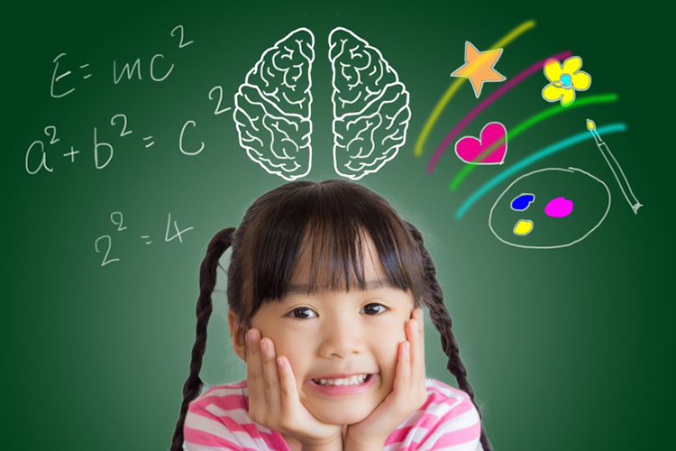

Hiệu ứng Pygmalion
Hiệu ứng này được đặt tên theo một truyền thuyết Hy Lạp từ thời xa xưa, thời có nhà điêu khắc nổi tiếng tên Pygmalion. Với búa và dùi ông đã tạo ra được một bức tượng hoàn hảo, với một người con gái tuyệt đẹp. Ông nhìn ngắm tác phẩm mình mỗi ngày và chăm sóc nó như 1 thực thể sống, sau một thời gian phép màu xảy ra, bức tượng biến thành người thật.
Hiệu ứng này áp dụng khá hiệu quả vào việc giáo dục con người: việc gán cho ai đó những đặc điểm tốt, lâu dần nó sẽ chuyển biến theo chiều hướng tích cực. Trẻ có xu hướng hoàn thành các công việc mà cha mẹ tin tưởng, kỳ vọng. Do đó cha mẹ dạy con khéo là cha mẹ biết truyền cho con niềm tin và sự kỳ vọng.
Hiệu ứng siêu hạng
Hiệu ứng này được bắt nguồn từ một câu chuyện: một nhà văn nổi tiếng đi nghe mục sư giảng giải trong một nhà thờ. Lúc đầu ông cảm thấy mục sư giảng rất hay, cảm động và ông đang dự định quyên góp tiền. Nhưng qua 10 phút mục sư vẫn chưa giảng giải xong, ông bắt đầu mất kiên nhẫn nên quyết định sẽ quyên góp một ít tiền lẻ. Sau 10 phút tiếp theo mục sư vẫn tiếp tục giảng giải ông quyết định sẽ không quyên góp nữa.
Hiện tượng này đồng nghĩa với việc khi bị kích thích quá nhiều, quá mạnh và thời gian tác động quá lâu sẽ khiến tâm lý cực kỳ khó chịu và xảy ra phản kháng. Bởi thế khi dạy con, cha mẹ nên khiển trách con ở một mức độ nhất định, tránh đay nghiến khiến trẻ trở nên lo lắng, bất an, chán ghét dần trở nên có thái độ phản kháng.
Hiệu ứng tăng giảm
Hiệu ứng này cực kỳ thú vị trong giao tiếp, bất cứ ai cũng đều thích được người khác yêu thích, khen ngợi chứ không muốn bị chê bai ghét bỏ. Bởi thế những người bán hàng khôn khéo luôn nắm bắt tâm lý này của khách hàng, ví dụ như: Khi bán hàng một thứ gì đó cần phải cân đo, người ta thường bỏ ít và cho thêm dần vào cho đến khi đủ, chứ không nên cho quá nhiều rồi lấy ra, mặt dù lượng hàng bán là như nhau.
Đánh giá những đứa trẻ cũng tương tự thế, nên khen chúng trước khi góp ý điều gì đó để chúng thay đổi. Điều đó sẽ giúp trẻ cảm nhận được sự yêu thương, quan tâm của bậc cha mẹ đối với mình. Từ đó chúng sẽ tiếp thu một cách dễ dàng và hoàn thiện bản thân hơn.